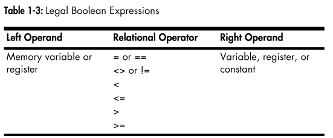

Contents
program pgmID;
<< Declarations >>
begin pgmID;
<< Statements >>
end pgmID;
program baseData;
#include("stdlib.hhf")
static
a: int8 := 8;
b: int16 := 16;
c: int32 := 32;
d: boolean := false;
e: boolean := true;
f: char := 'A';
begin baseData;
stdout.put("a = ", a, nl);
stdout.put("b = ", b, nl);
stdout.put("c = ", c, nl);
stdout.put("d = ", d, nl);
stdout.put("e = ", e, nl);
stdout.put("f = ", f, nl);
end baseData;
80x86CPU体系是典型的冯-诺依曼结构，主要由下面三个部分组成：
以上三者通过 系统总线 来进行通信。
mov(source_operand, destination_operand);
在高级语言里的同等语义为：
destination_operand = source_operand;
source_operand可为：寄存器、内存、常量
destination_operand可为：寄存器、内存
机器指令mov不允许，两者都为内存，但是HLA的mov指令是支持的。
Note
source_operand和destination_operand必须是一样的数据长度。
HLA使用0表示false, 其它表示true。
HLA支持的布尔表达式格式：
flag_specification
!flag_specification
register
!register
Boolean_variable
!Boolean_variable
mem_reg relop mem_reg_const
register in LowConst..HiConst
register not in LowConst..HiConst
或者：
举例：
@c
Bool_var
al
esi
eax < ebx
ebx > 5
i32 < -2
i8 > 128
al < i8
eax in 1..100
ch not in 'a'..'z'
@z && al in 5..10
al in 'a'..'z' && ebx
Bool_var && !eax
@z || al = 10
al in 'a'..'z' || ebx
!Bool_var || eax
!(eax < 0)
Note
布尔表达式中两边的操作数不能都为内存，而且两者的长度要一样。
Warning
这里有一个问题：如果布尔表达式中左值为register，右值为一个正数或者另外一个register，HLA将之当作无符号类型来进行比较。
if (expression) then
<< sequence of one or more statements >>
endif;
if (expression) then
<< sequence of one or more statements >>
else
<< sequence of one or more statements >>
endif;
if (expression) then
<< sequence of one or more statements >>
elseif (expression) then
<< sequence of one or more statements >>
else
<< sequence of one or more statements >>
endif;
while(expression) do
<< sequence of one or more statements >>
endwhile;
for(Initial_Stmt; Termination_Expression; Post_Body_Statement) do
<< Loop body >>
endfor;
repeat
<< sequence of one or more statements >>
until(expression);
break&&breakif:
break;
breakif(expression);
Note
不支持多层循环体退出
continue&&continueif:
continue;
continueif(expression);
try
<< sequence of one or more statements >>
exception(exceptionID)
<< sequence of one or more statements >>
exception(exceptionID)
<< sequence of one or more statements >>
endtry;